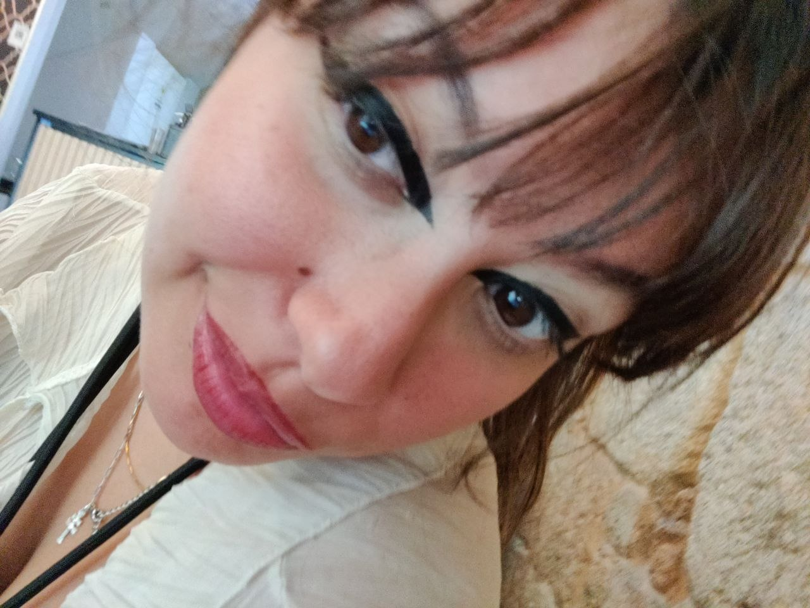
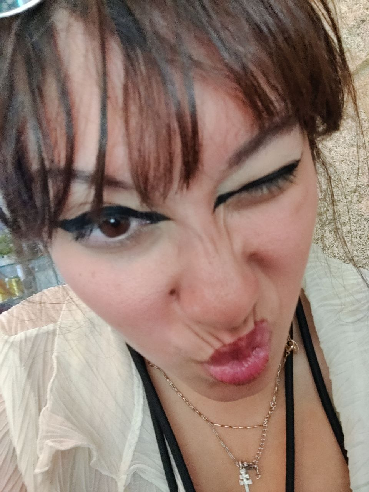
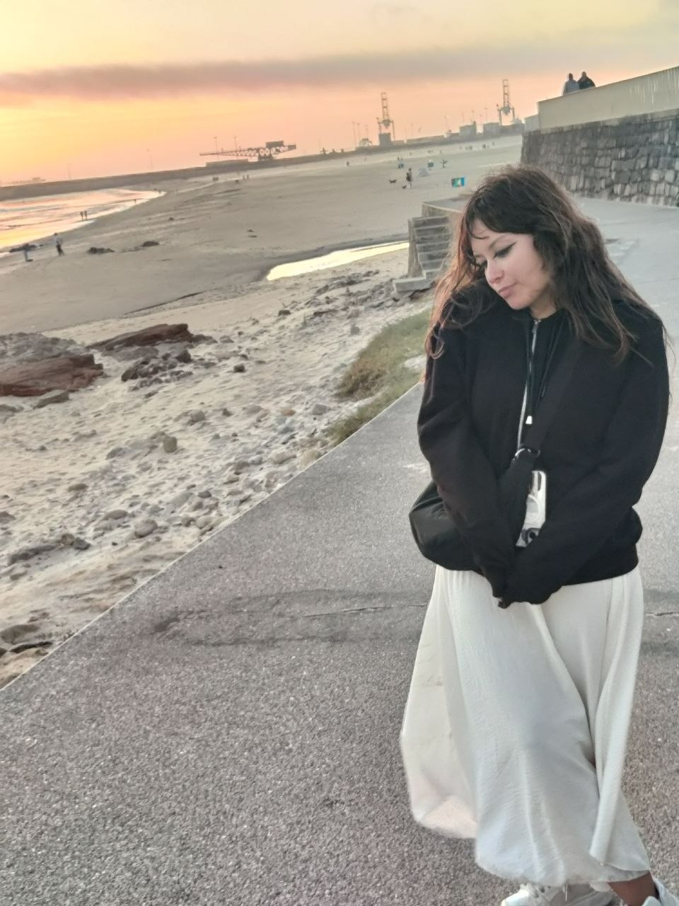

Optometrista
Esperienza in esami della vista, fitting di lenti a contatto, consulenza e correzione visiva. Formazione pratica in corso.

Studentessa di Ottica e Optometria al terzo anno. Attualmente a Madrid per tirocinio in MultiOpticas e Ospedale Infanta Leonor. Obiettivo: fare il master in clinica ospedaliera a Madrid e aprire una clinica.


Esperienza in esami della vista, fitting di lenti a contatto, consulenza e correzione visiva. Formazione pratica in corso.
MultiOpticas + Ospedale Infanta Leonor, Madrid. Formazione clinica sul campo in ambiente ospedaliero.
Università Bicocca (Milano) e Complutense (Madrid). Master in clinica ospedaliera a Madrid: questo è l'obiettivo.
Il mio progetto
Immagina un luogo dove l'optometria incontra la tecnologia, dove ogni paziente viene seguito con attenzione e professionalità. Dove non siamo solo un negozio di occhiali, ma un centro di salute visiva completo.
Questo è il mio obiettivo. Non solo vendere lenti — fare la differenza nella vita delle persone attraverso la cura della vista.
Se stai cercando un'optometrista motivata, o se vuoi essere parte di questo progetto, parliamo.
Mettiti in contattoSe stai cercando un'optometrista, vuoi collaborare o semplicemente vuoi salutare — sono qui.